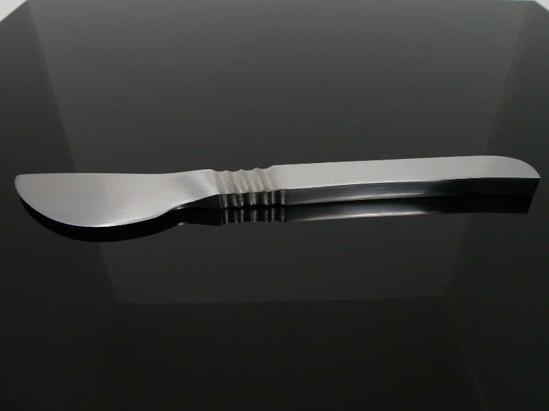

Scalpel Scalpel
Scalpel ScalpelThe methods used for the shaping of hand-made knife blades can be divided into two categories: forging and stock-removal. Forging involves heating the steel until malleable so that it can be hammered into shape. The stock-removal method begins with a piece of barstock, from which material is removed via grinding or cutting until the blade is the desired shape. Many hand-made knives, like the one below, use a combination of the two methods of shaping.
This is the first knife I successfully forged. It began as a piece of 1/2" O1 toolsteel barstock. O1 is an oil-hardening steel, a very simple alloy, and very forgiving in forging. Even so, hot forging high-carbon steel can be tricky: If the steel is worked too cold, it can crack, especially when quenched in hardening; if worked too hot, carbon begins to burn out of the steel and excess scale develops. Finding the right temperature at which to work the steel is vital, and I am pleased to say that I got it right on this knife.

My inspiration for the design was, of course, the medical scalpel. I thought that a small, concealable knife with a deep belly would make an efficient tool for last-ditch self defense, as well as being useful for field dressing animals in an emergency situation.
The handle is obviously integral with the blade. Ridges carved at the ricasso are designed to be held between the thumb and forefigner, providing positive grip during the pull-cut to which the blade lends itself.
Created by Sean Corron, April 2, 2011.